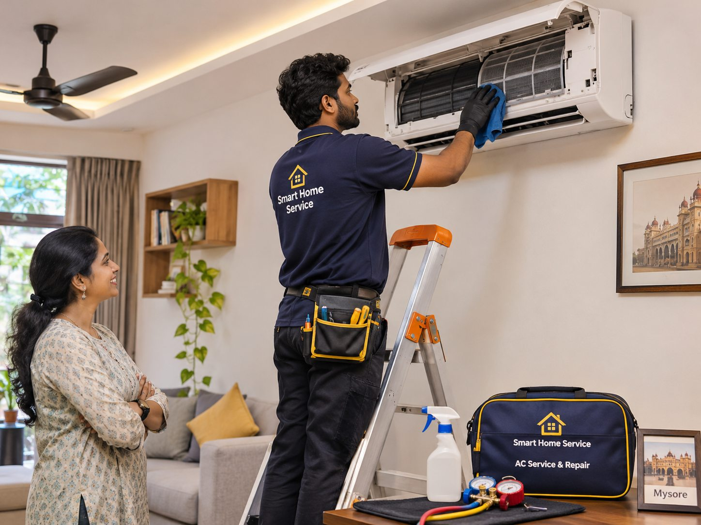
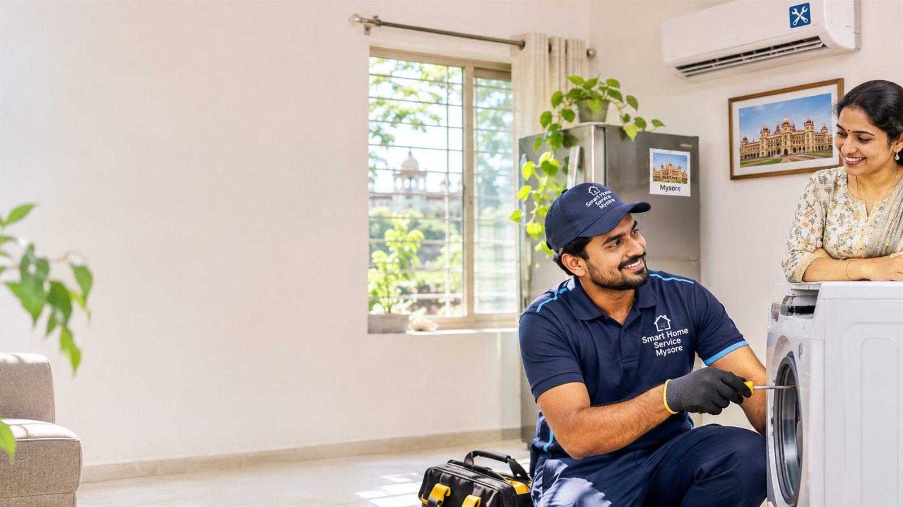
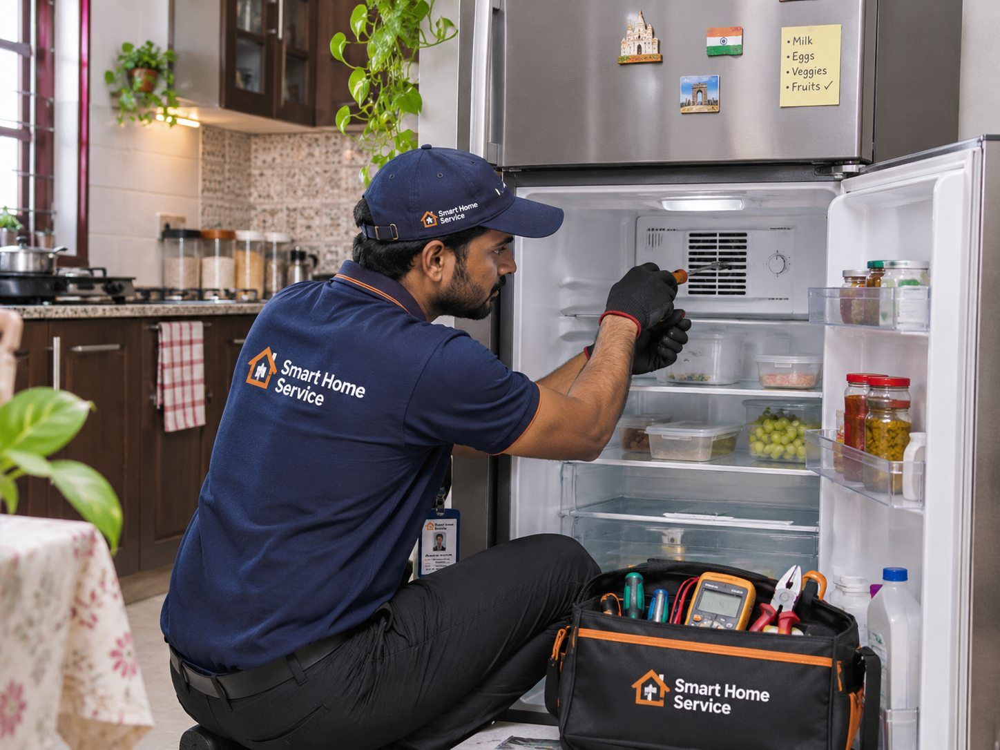
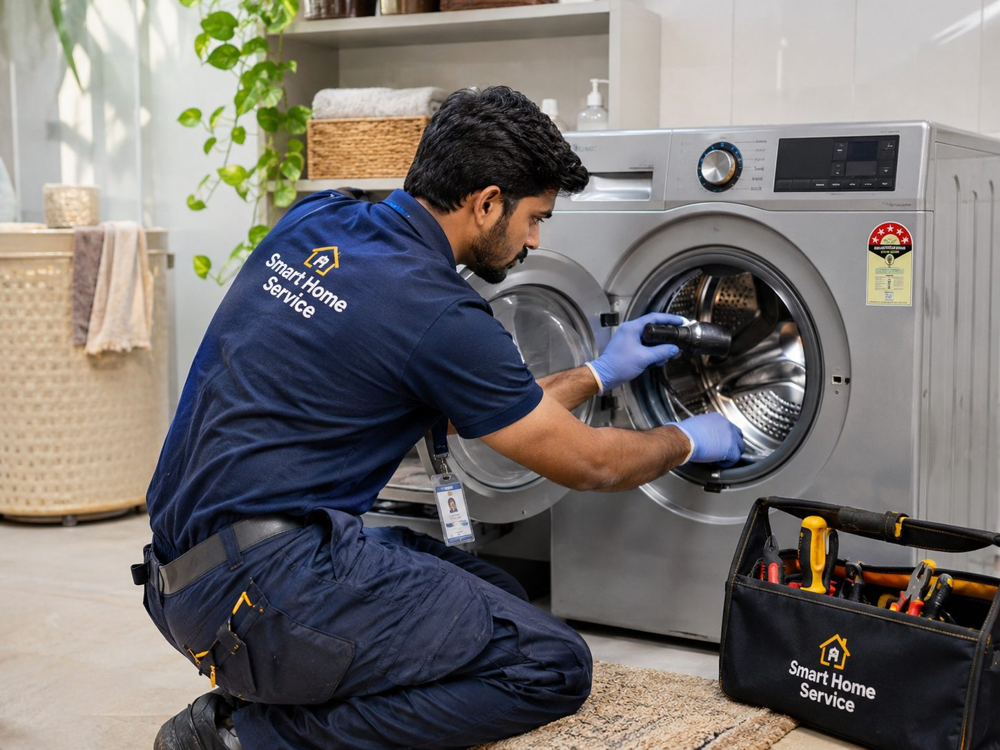
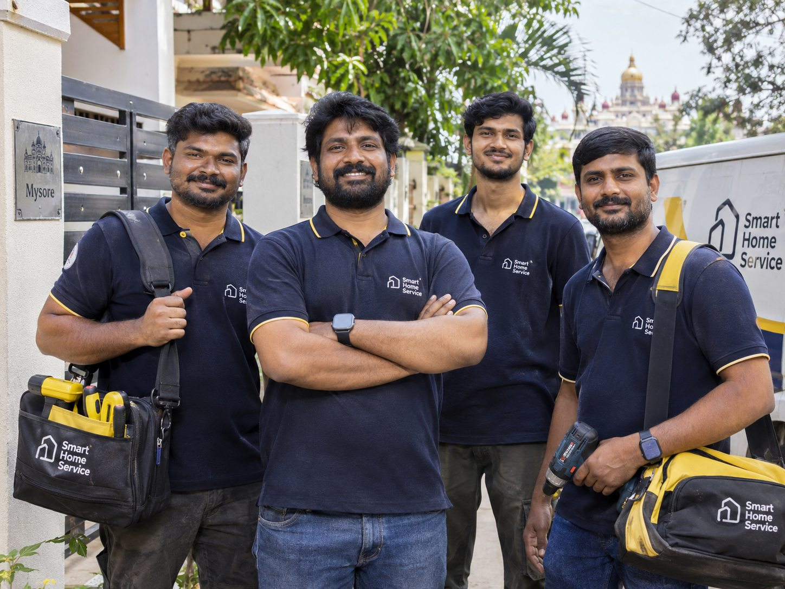
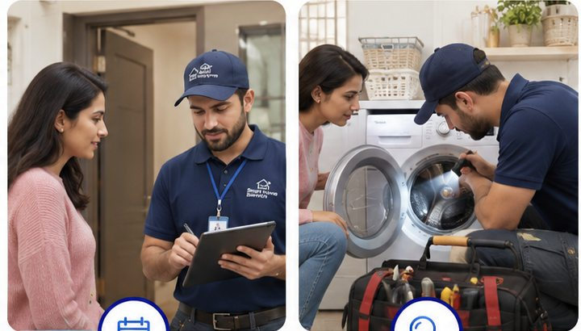
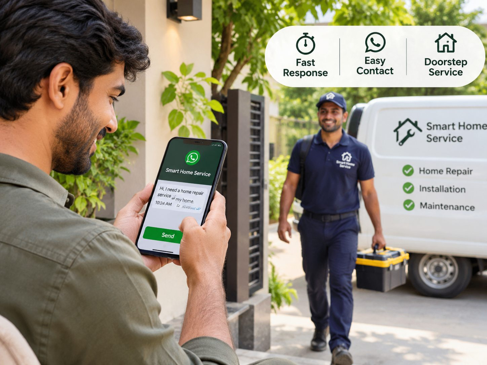

AC Service & Repair
General and jet service, cooling problems, gas refilling, water leakage, installation and uninstallation for split and window ACs.
Service from ₹599
View AC Services →Free visit & inspection. Technician at your door within 30 minutes during working hours. 30-day warranty on every repair.

When your AC stops cooling, your fridge goes warm or your washing machine won't spin, you need a team that comes quickly and fixes it properly.

General and jet service, cooling problems, gas refilling, water leakage, installation and uninstallation for split and window ACs.
Service from ₹599
View AC Services →
Not cooling, gas refilling, compressor, thermostat and PCB faults, water leaks and door gaskets for different fridge types.
Repairs from ₹300
View Fridge Repair →
Not spinning, not draining, noise and shaking, error codes and door lock problems in front-load, top-load and semi-automatic machines.
Repairs from ₹300
View Washing Machine Repair →Our own local team handles your repair, follow-up and warranty. You speak directly to the people who fix your appliance.
No visiting charge and no inspection fee. You pay only for the repair you approve.
Our technicians are spread across Mysore. Arrival time is confirmed on your call during working hours.
If the same problem comes back within 30 days, contact us with your repair bill.
We explain the fault and share the repair cost, including spare parts, before starting.
More than 1,000 completed jobs across Mysore homes.

No app to install and no platform fee. The same local team handles your repair and follow-up.
Call 86605 19706From first call to final testing, we keep the process clear.

Tell us which appliance needs attention and your Mysore area.
Our technician checks the appliance and explains the fault and cost.
We start only after you approve the quote. Most repairs are completed in the same visit.
We test the appliance and provide a bill with a 30-day warranty.
Our technicians cover neighbourhoods across Mysore. Don't see your area? Call us and we'll confirm availability.
Yes. Our technician checks the appliance and shares the repair cost at no charge. You pay only if you approve the repair.
In most parts of Mysore, our technician aims to reach within 30 minutes during working hours. Call or WhatsApp us to confirm the arrival time.
If the same fault returns within 30 days of the repair, contact us with the bill so our team can review and arrange a follow-up.
We repair major brands including LG, Samsung, Whirlpool, Godrej, Haier, Bosch, IFB, Panasonic, Voltas, Daikin, Blue Star, Hitachi, Carrier and Lloyd.
No. Smart Home Service is an independent multi-brand repair service, not an authorised service centre of any brand. If your appliance is under manufacturer warranty, contact the brand first.
Payment is due after the repair is completed and tested. Please confirm accepted payment methods when speaking with our team.
Free visit and inspection, clear quote before work and a 30-day warranty.
